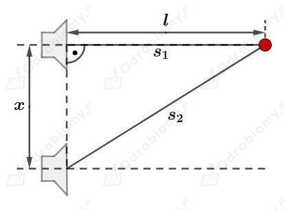

Długość fali dźwiękowej w powietrzu:
Prędkość dźwięku w powietrzu wynosi:
Prędkość dźwięku w wodzie wynosi:
Prędkość fali wyrażamy jako:
Stąd częstotliwość fali będzie równa:
Dla fali dźwiękowej w powietrzu:
Częstotliwość fali dźwiękowej w powietrzu i w wodzie będzie taka sama. Częstotliwość fali nie zmienia się przy jej przejściu między dwoma różnymi ośrodkami.
Długość fali w wodzie wyznaczymy jako:
Światło odbija się od powierzchni kartki w różne strony, ponieważ powierzchnia kartki nie jest idealnie gładka. W dużym powiększeniu powierzchnia kartki papieru jest bardzo nieregularna. Światło odbija się od tych nieregularności powierzchni zgodnie z prawem odbicia, co wypadkowo daje rozproszenie światła w różnych kierunkach.
Całkowite wewnętrzne odbicie może zajść:
B. Gdy światło pada na granicę powietrza i wody od strony wody.
C. Gdy dźwięk pada na granicę powietrza i wody od strony powietrza.
Całkowite wewnętrzne odbicie ma możliwość zajścia tylko jeśli fala pada pod odpowiednim kątem i przechodzi do ośrodka, w którym rozchodzi się szybciej. Światło rozchodzi się szybciej w powietrzu niż w wodzie, a dźwięk rozchodzi się szybciej w wodzie niż w powietrzu.
Całkowite wewnętrzne odbicie może zajść, gdy promień światła pada na granicę diamentu z powietrzem pod kątem:
C. 60° od strony diamentu.
Światło rozchodzi się szybciej w powietrzu niż w diamencie. Zatem, aby doszło do całkowitego wewnętrznego odbicia światło musi przechodzić z diamentu do powietrza i padać pod odpowiednim kątem - większym od kata granicznego.
Fala dźwiękowa nie może zostać spolaryzowana, ponieważ jest falą podłużną. Tylko fale poprzeczne mogą ulegać polaryzacji.
Prędkość pociągu będącego źródłem fali dźwiękowej:
Prędkość dźwięku w powietrzu:
Częstotliwość emitowanego dźwięku:
Korzystamy ze wzoru:
Wyznaczmy zmianę częstotliwości dźwięku jaką odbiera osoba stojąca na peronie.
Źródło dźwięku zbliża się do obserwatora, zatem ten usłyszy dźwięk o zwiększonej częstotliwości .
Osoba stojąca na peronie słyszy dźwięk o częstotliwości 877,5 Hz.
Sposób na obalenie hipotezy Zenona:
Potrzebujemy 2 osoby, które znajdują się na różnych długościach geograficznych na Ziemi. Mogą być to np. osoby znajdujące się w Polsce i w Ameryce.
Zgodnie z hipotezą Zenona Słońce zmienia okresowo barwę emitowanego światła - wysyłane w kosmos promieniowanie elektromagnetyczne, które dociera do Ziemi zmienia okresowo swoją długość. Do wszystkich obserwatorów na Ziemi (znajdujących się na oświetlonej półkuli Ziemi), w danej chwili docierają fale elektromagnetyczne o zadanej długości fali.
Zatem jeżeli w danej chwili obserwator znajdujący się w Polsce obserwuje zachód słońca (czas lokalny w Polsce 21:00) to obserwowaną barwę światła docierającą ze Słońca określi jako czerwoną. W tej samej chwili obserwator znajdujący się w Ameryce nie obserwuje zachodu Słońca (jego czas lokalny w Ameryce to mniej więcej 16:00). W tej samej chwili obserwator w Ameryce obserwuje Słońce jeszcze wysoko nad horyzontem i obserwuje żółtą barwę światła dochodzącego ze Słońca.
Nie ma możliwości zatem, aby dobowa zmiana barwy Słońca wynikała z okresowej zmiany emitowanych fal elektromagnetycznych przez Słońce, ponieważ obserwowana barwa Słońca nie jest spójna dla dwóch różnych obserwatorów znajdujących się na Ziemi obserwujących Słońce w tej samej chwili.
Rysunek pomocniczy do zadania:

Długość fali emitowanej przez głośniki wynosi:
Różnica dróg przebytych przez fale wyemitowane z każdego głośnika i docierające do czerwonego punktu będzie równa:
Korzystając z twierdzenia Pitagorasa możemy zapisać:
Stąd:
Warunek na maksymalne wygaszenie fali jest dany jako:
Szukamy najmniejszej odległości między głośnikami więc przyjmujemy za najmniejszą liczbę naturalną:
Stąd:
Wyznaczmy szukaną odległość między głośnikami:
Najmniejsza odległość między głośnikami, dla której zajdzie całkowite wygaszenie fali wynosi 63 cm.
Prędkość dźwięku przyjmujemy jako:
Częstotliwość dźwięku słyszanego przez obserwatora jest o 6% wyższa od częstotliwości dźwięku emitowanego przez poruszające się źródło.
Korzystamy ze wzoru:
Zmianę częstotliwości dźwięku jaką zauważa obserwator wyrazimy jako:
Stąd:
Wyznaczmy prędkość źródła dźwięku:
Samochód porusza się z prędkością 74,3 km/h. Pieszy słyszy dźwięk o wyższej częstotliwości, więc samochód musi zbliżać się do pieszego.